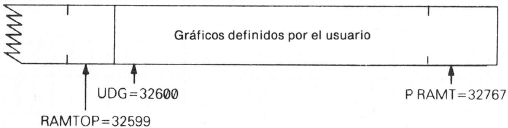
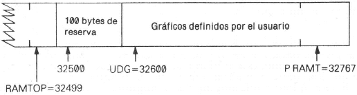
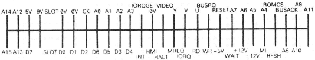

Manual de Basic Spectrum 48k. |
|
Capítulo 26
Empleo del código máquinaResumen
Este capítulo está concebido para quienes entienden el código máquina del Z80, que es el conjunto de instrucciones que utiliza el microprocesador Z80. Si no es su caso, pero le gustaría conocerlo, hay mucha bibliografía sobre esta materia y no le será difícil encontrar un libro adecuado en una librería especializada. Estos programas suelen estar escritos en lenguaje ensamblador, que, aunque sea algo especial, no resulta demasiado difícil de entender con la práctica (puede consultar las instrucciones de lenguaje ensamblador en el apéndice A). Sin embargo, para ejecutarlos en el ordenador necesita codificar el programa en una secuencia de bytes (en esta forma, se denomina código máquina). Esta traducción suele hacerse por el propio ordenador, con el empleo de un programa llamado ensamblador. No hay ningún ensamblador incorporado en el Spectrum, pero puede adquirir uno en cassette. Si no lo adquiere, tendrá que hacer la traducción por sí mismo, a condición de que el programa no sea demasiado largo. A título de ejemplo, sea el programa:
que carga el par de registros bc con 99. Traduce a los cuatro bytes de código máquina 1, 99, 0 (por ld bc, 99) y 201 (por ret). (Si busca 1 y 201 en el Apéndice A, encontrará ld bc, NN (en donde NN significa cualquier número de dos bytes) y ret.) Cuando tenga su programa de código máquina, el siguiente paso es conseguir su introducción en el ordenador (probablemente, un ensamblador haría esta tarea de forma automática). Necesita decidirse en qué lugar de la memoria ha de ponerse y lo mejor que se puede hacer es conseguir espacio suplementario para tal objeto entre la zona del BASIC y los gráficos definidos por el usuario. Supongamos, por ejemplo, que tiene una memoria de 16K para el Spectrum. Para comenzar, el extremo superior de la RAM tiene: 
Si teclea: CLEAR 32499
le proporcionará un espacio de 100 (para estar seguro) bytes que comienza en la dirección 32500. 
Para introducir el programa en código máquina, ha de ejecutar un programa en BASIC como el siguiente:
(se producirá una interrupción con el informe E Out of DATA cuando haya rellenado los cuatro bytes que especificó). Para ejecutar el código máquina, ha de emplear la función USR, pero esta vez con un argumento numérico, la dirección de comienzo. Su resultado es el valor del registro bc en el retorno desde el programa en código máquina, por consiguiente, si hace: PRINT USR 32500
obtendrá la respuesta 99. La dirección de retorno al BASIC se almacena en la forma habitual, por lo que el retorno se hace mediante una instrucción ret del Z80. No debe emplear los registros iy e i en una rutina en código máquina. Los buses de control, de datos y de direcciones están accesibles en la parte posterior del Spectrum, por lo que con un Spectrum puede hacer casi todo lo que pudiera realizar con un Z80. A veces, sin embargo, al hardware del Spectrum podría plantear inconvenientes. Damos la ilustración de un diagrama de las conexiones expuestas en la parte posterior. 
Puede conservar su programa en código máquina bastante fácilmente con: SAVE "algún nombre" CODE 32500, 4
Por lo que se ha visto, no hay ninguna forma de realizar la conservación de modo que cuando se cargue automáticamente se ejecute por sí mismo, pero puede eludir esta dificultad con el empleo de un programa en BASIC.
Haga primero: SAVE "algún nombre" LINE
y luego:
que cargará y ejecutará automáticamente el programa en BASIC y este último cargará y ejecutará el código máquina. |
Manual de Basic Spectrum 48k. |